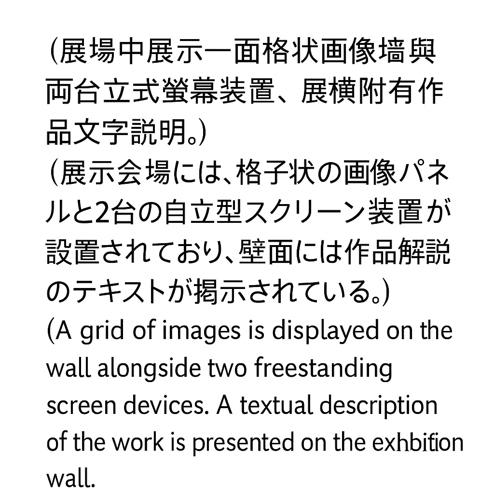

圖像大賽｜画像大会｜Image Tournament
這是一個圖像淘汰系統。
所有圖像同時被展示於圖庫牆面，現場設有兩台互動裝置：
- 裝置一：觀眾可針對任意一張圖像輸入描述。
- 裝置二：顯示由裝置一輸入的所有語句，觀眾需從圖像中選出一張與語句相符的圖像。圖像一旦被選中，即從畫面中刪除，從《圖像大賽》中淘汰。
最後存活下來的，是那些特別到難以描述、無法定義的圖像。
它們是圖像中的菁英。
これは画像の淘汰システムである。
すべての画像は同時に画像ウォールに表示され、会場には2台のインタラクティブ装置が設置されている。
- 装置1：任意の画像に対して、観客がテキストによる説明を入力する。
- 装置2：入力された語句を表示し、観客はその語句に該当する画像を選ぶ。選ばれた画像は即座に削除され、《画像大会》から淘汰される。
最後まで残るのは、あまりにも特異で、記述も定義もできない画像たちである。
それらは画像の中のエリートである。
This is a system of image elimination.
All images are displayed simultaneously on a shared image wall. Two interactive terminals are installed on-site:
- Terminal 1: Viewers may enter a textual description for any image.
- Terminal 2: Displays all submitted descriptions. Viewers must select an image that matches the given text. Once selected, the image is immediately removed from the display and eliminated from the Image Tournament.
The ones that remain are those too distinct to be described, too complex to be defined.
They are the elite among images.

← BACK